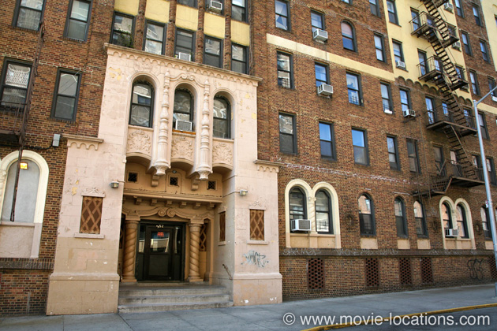
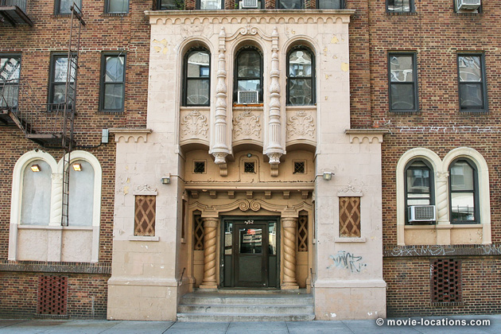
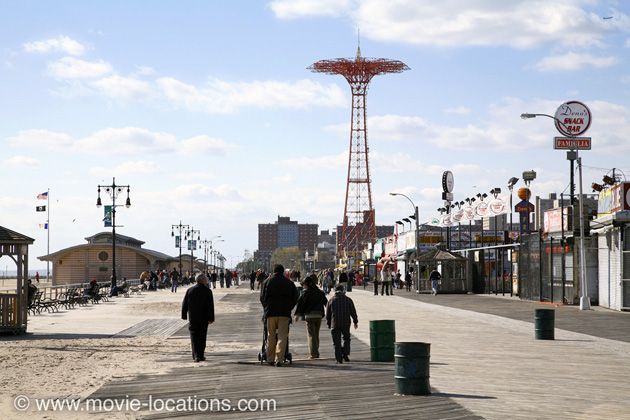
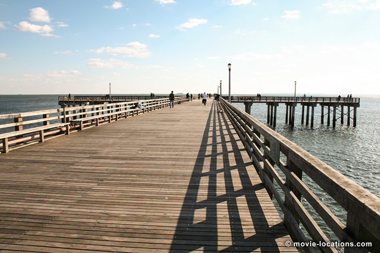
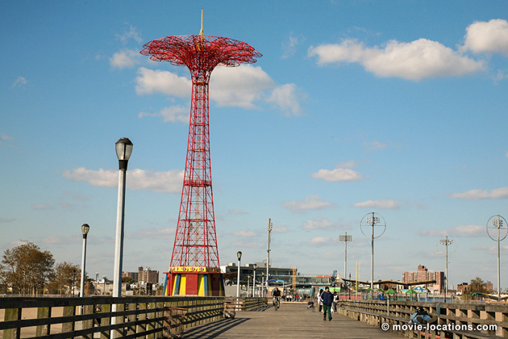

Requiem For A Dream
Main Content

Discover the Brighton Beach and Coney Island locations in Brooklyn for Darren Aronofsky's intense Requiem For A Dream.
Hubert Selby Jr’s (Last Exit to Brooklyn) novel about four people and their addictions is turned into a intense, expressionist experience, shot in director Darren Aronofsky’s neighbourhood of Coney Island and Brighton Beach, Brooklyn.
The apartment of TV obsessed Sara Goldfarb (Oscar-nominated Ellen Burstyn) is 3152 Brighton Sixth Street at Ocean View, Brighton Beach, Brooklyn’s old seaside Russian community (next door to the apartment is the Winter Garden Russian restaurant, which you can glimpse in the movie).

Brighton Sixth Street leads to the Boardwalk, which stretches west to famed resort Coney Island. Sara’s son, Harry Goldfarb (Jared Leto), with his buddy Tyrone (Marlon Wayans), drags his mum’s TV set along the Coney Island Boardwalk, past the vast hulk of the old Thunderbolt rollercoaster, which was demolished shortly after filming (not the famous Cyclone, which is still going strong). It was beneath the Thunderbolt that the Woody Allen character lived in Annie Hall. Coney Island was also the gang's home turf in Walter Hill's 1979 The Warriors.
The D, Q, N or F trains will take you to Stillwell Avenue Station, but be aware the journey from midtown Manhattan can take up to an hour.

Harry has a romantic dream of seeing Marion (Jennifer Connelly) at the end of Steeplechase Pier on the Boardwalk between West 16th and West 19th Streets.

The odd red tower seen in the background of many of the scenes is the 262-foot Parachute Jump, built as a military training aid, and later converted to an amusement park ride in the old Steeplechase Park, Coney Island, opposite the Steeplechase Pier.

Although closed in 1968, it’s recently been restored as part of a massive regeneration of the area, and is now a protected landmark.
Visit Info
Visit The Film Locations
New York
Flights: John F Kennedy International Airport, New York, NY 11430 (tel: 718.244.4444)
Visit: New York
Travel around: MTA
Visit: Coney Island (D, Q, N or F train to Stillwell Avenue)